0xEF = 239 / カフェ / 新潟県新潟市東区
la maison deeF
新潟県新潟市東区にあるカフェ「la maison de eF」のご案内ページです。営業時間やメニューなど、詳しいことは準備中。電話は 025-278-8096、まずはInstagramものぞいてみてください。
制作側の連想
屋号の末尾「eF」から、0からFまでの十六マス
屋号の由来は分かりません。制作側は、屋号の終わりの「eF」を、16進数の数字(E=14、F=15)に見立てました。0から9、AからFまでの16個の数字を、16枚のマスにして並べたのがこのサイトです。各マスの色コードは、その写真全体の平均色を機械的に求めたものです。お店の理念・由来とは無関係な、制作側の連想です。
0 ~ F
十六マスの色見本帖
0〜Dの14マスは、国外・撮影地不明のフリー素材のイメージです。EとFのマスは屋号の文字です。写真は新潟市東区や実際のお店のものではありません。
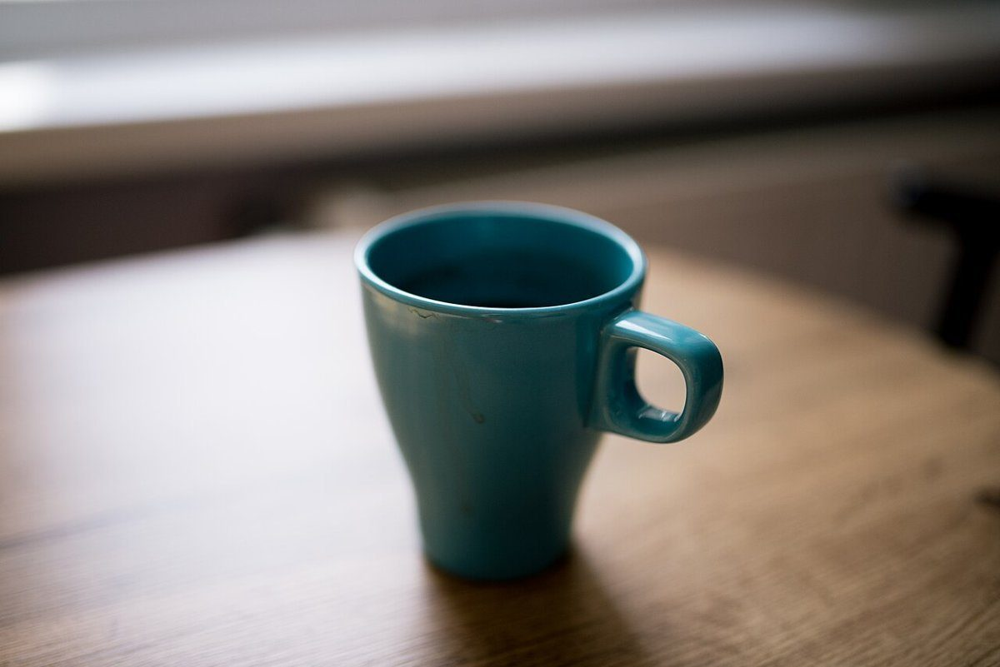
0 #827e79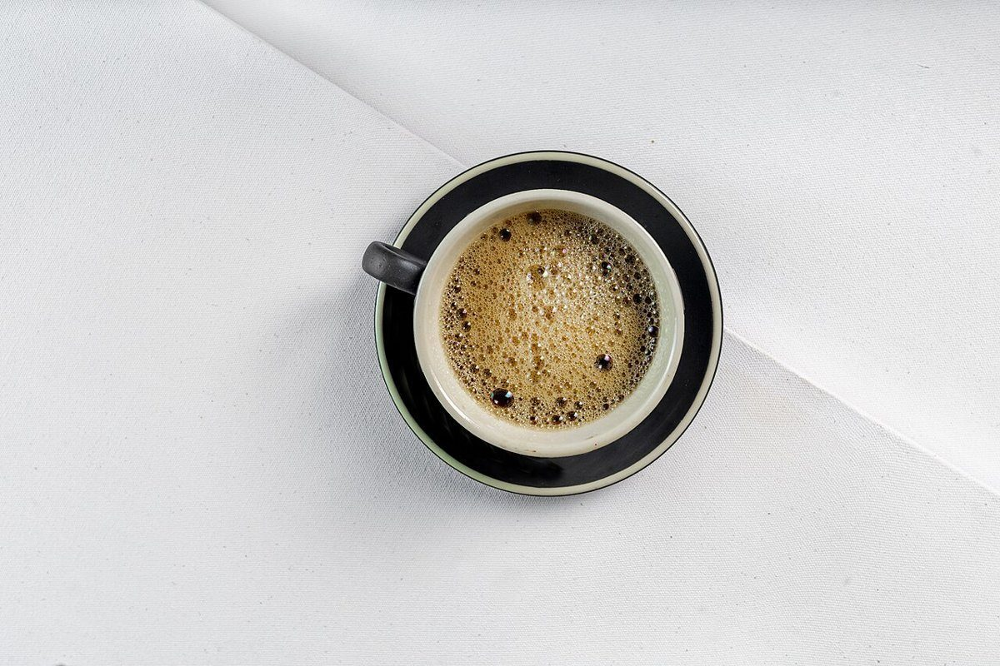
1 #c9c7c4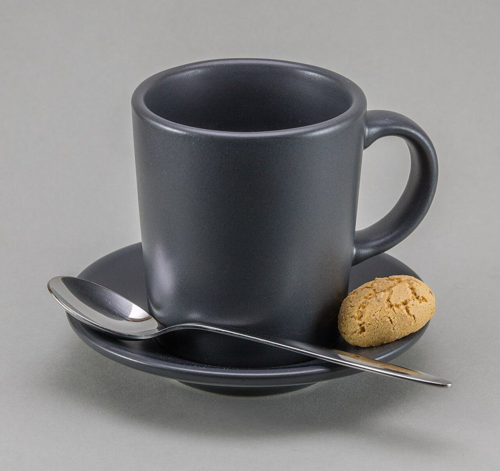
2 #7a7a7a- 3 #5e3627
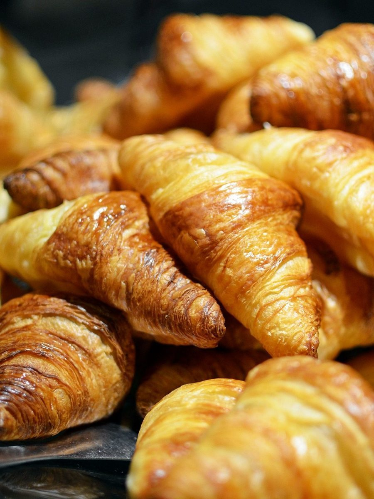
4 #a67639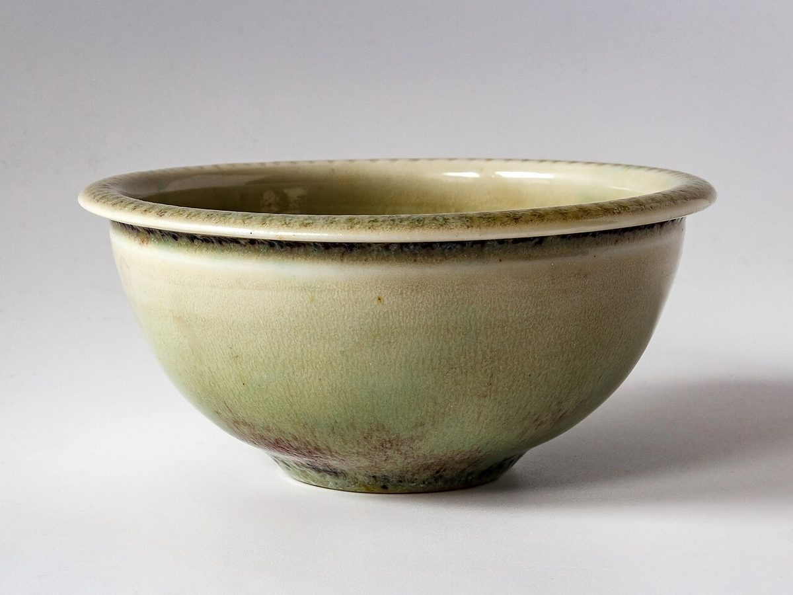
5 #ada99d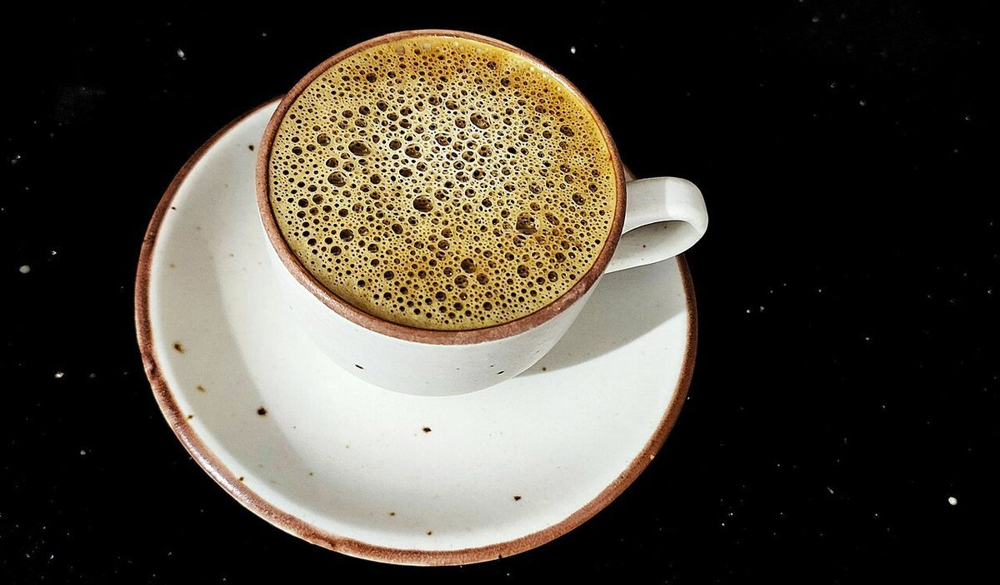
6 #585145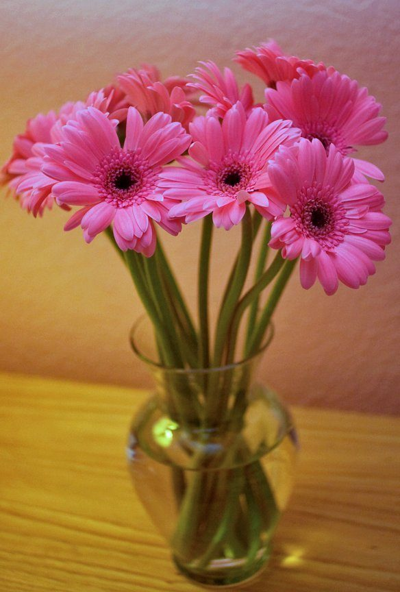
7 #a2664c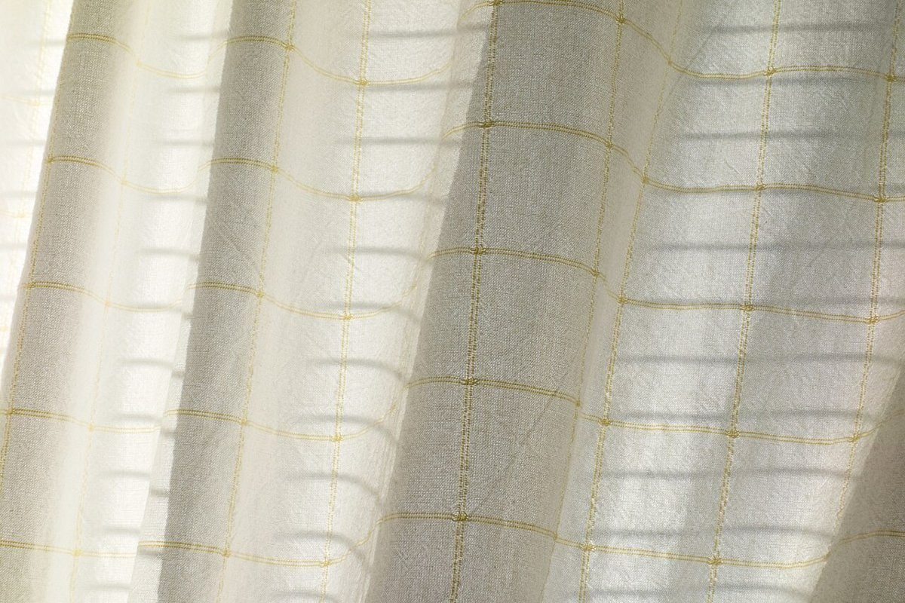
8 #c0bcad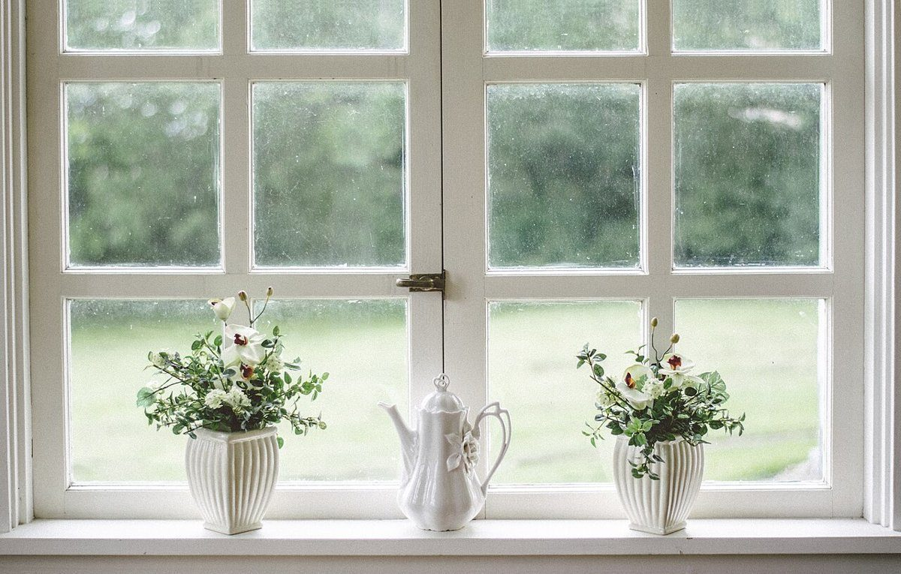
9 #b1b7aa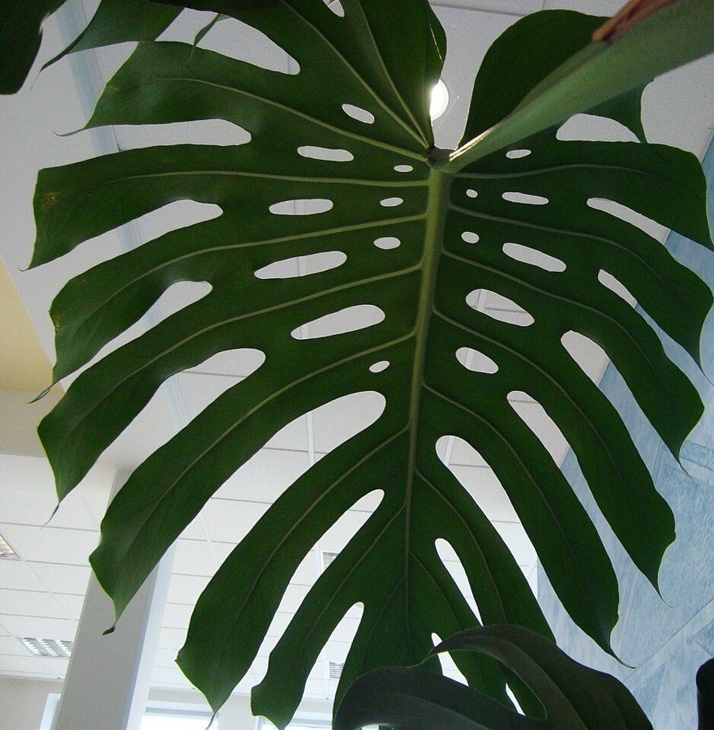
A #4d5c48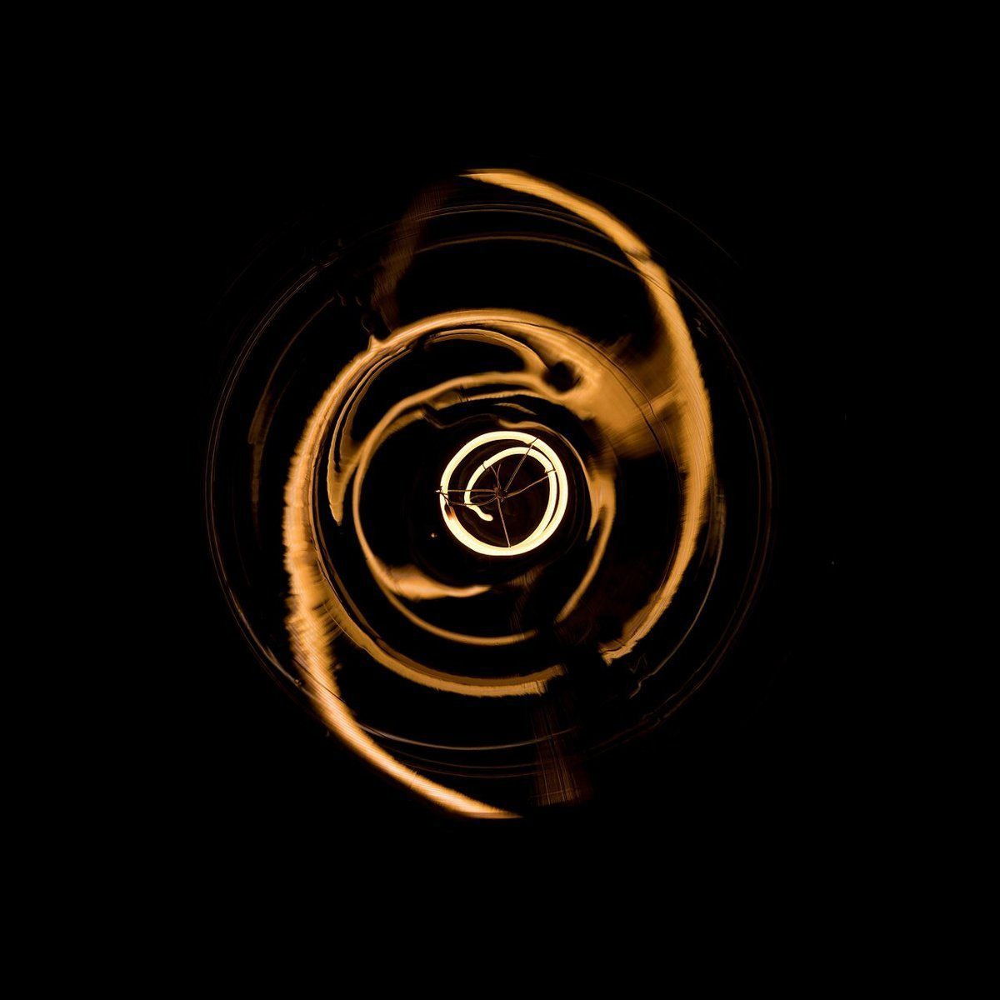
B #110b05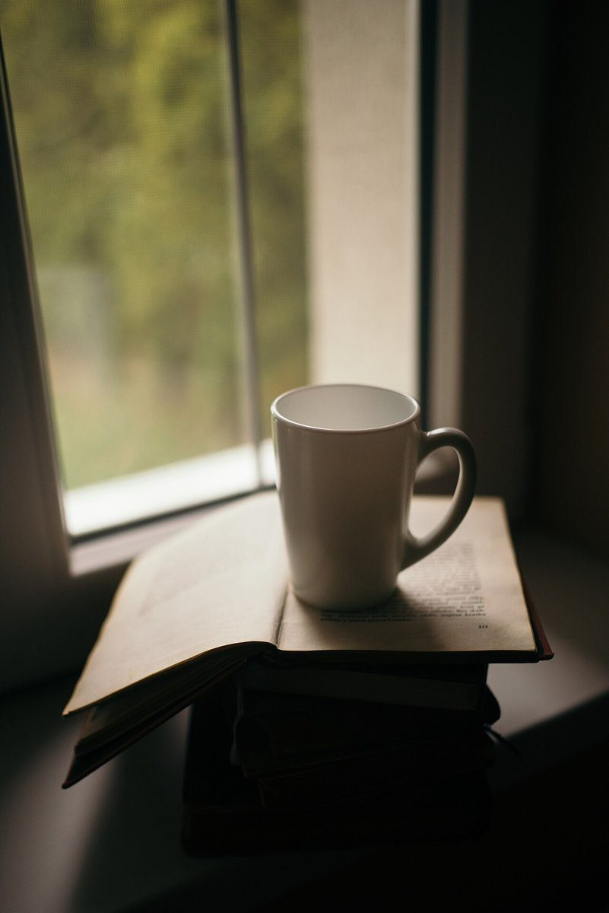
C #5a5443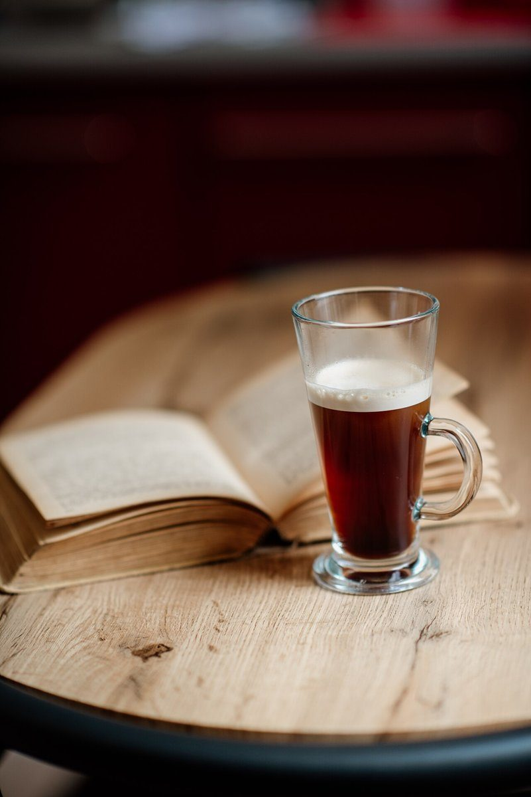
D #6d564a- eE =14
- FF =15
ご案内
お店のこと(確認できたものだけ)
| 所在地 | 〒950-0005 新潟県新潟市東区太平３丁目32−５ |
|---|---|
| 電話 | 025-278-8096 |
| 営業時間 | 準備中 |
| 定休日 | 準備中 |
| ご予約 | 準備中 |
| 駐車場 | 準備中 |
| SNS | Instagram @la_maison_de_ef |